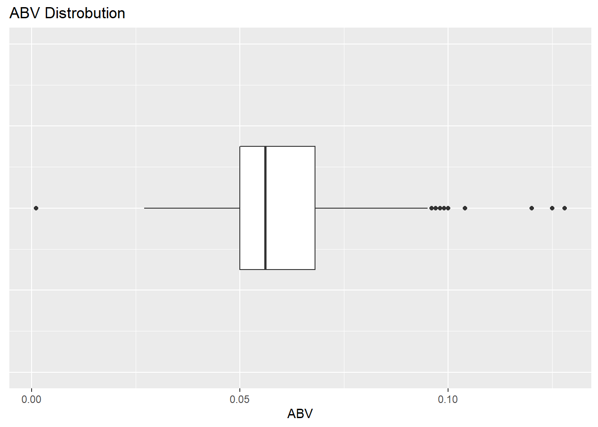
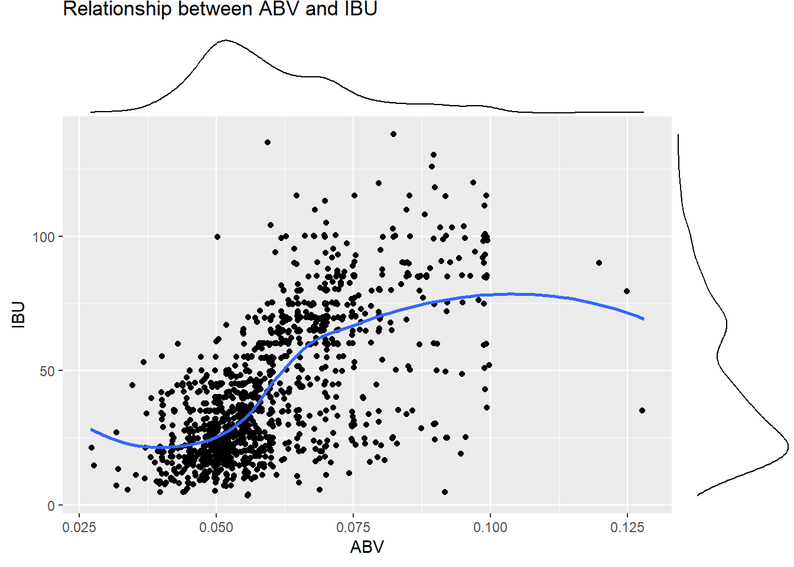

library(tidyverse)## ── Attaching packages ─────────────────────────────────────── tidyverse 1.3.2 ──
## ✔ ggplot2 3.3.6 ✔ purrr 0.3.4
## ✔ tibble 3.1.8 ✔ dplyr 1.0.9
## ✔ tidyr 1.2.0 ✔ stringr 1.4.1
## ✔ readr 2.1.2 ✔ forcats 0.5.2
## ── Conflicts ────────────────────────────────────────── tidyverse_conflicts() ──
## ✖ dplyr::filter() masks stats::filter()
## ✖ dplyr::lag() masks stats::lag()library(class)
library(caret)## Loading required package: lattice
##
## Attaching package: 'caret'
##
## The following object is masked from 'package:purrr':
##
## liftlibrary(e1071)
library(dplyr)
library(ggthemes)
library(plotly)##
## Attaching package: 'plotly'
##
## The following object is masked from 'package:ggplot2':
##
## last_plot
##
## The following object is masked from 'package:stats':
##
## filter
##
## The following object is masked from 'package:graphics':
##
## layoutlibrary(ggExtra)
library(scales)##
## Attaching package: 'scales'
##
## The following object is masked from 'package:purrr':
##
## discard
##
## The following object is masked from 'package:readr':
##
## col_factorlibrary(scico)
library(stringr)
library(naniar)BeerData = data.frame(read.csv("~/SMU/Term 1/Doing Data Science/MSDS_6306_Doing-Data-Science-Master/Unit 8 and 9 Case Study 1/Beers.csv"))
stock_data = BeerData #this is for the gg_miss_var function
BreweriesData = data.frame(read.csv("~/SMU/Term 1/Doing Data Science/MSDS_6306_Doing-Data-Science-Master/Unit 8 and 9 Case Study 1/Breweries.csv"))# Tidy data
#Set state as a factor
BreweriesData$State = as.factor(BreweriesData$State)
BeerData$Style = as.factor(BeerData$Style)
# Remove (year) at the end of the names of beers
BeerData$Name = str_remove(BeerData$Name, "([:space:]|)\\(\\d\\d\\d\\d\\)")
# Remove white space at the start and end of beer names
BeerData$Name = str_trim(BeerData$Name)
#Shows how many duplicates of each beer, 240 unwanted duplicates in total
#BeerData %>% count(Name) %>% ungroup() %>% arrange(desc(n))
# Remove beers with the same name, removes 240 unwanted duplicates
BeerData = BeerData %>% group_by(Name) %>% filter(!duplicated(Name))# Manually add in missing data for beers for question/item #3
# Parsing through the data, we can see that a large amount of information from the IBV and ABV values of beer are missing.
# While it is possible to hand-fill out values for both, counting the total number of missing values over both groups add up to over 1000 missing values.
# For the most part, we can ignore the missing data, but we cannot prove that the missing data is truly random.
# While we can perform an analysis on the data, we must be cautious as to the bias the exclusion of missing data could apply to our results.
# After googling various beers without IBU's and looking for the missing value it seems like many are hard to find
BeerData[BeerData$Name == "Lee Hill Series Vol. 5 - Belgian Style Quadrupel Ale",]$IBU = 35
BeerData[BeerData$Name == "Pub Beer",]$IBU = 18
BeerData[BeerData$Name == "Sinister",]$IBU = 30
#gg_miss_var(BeerData) Did not work as intended, might use to visualize missing values, might not be necessary
gg_miss_var(stock_data)## Warning: It is deprecated to specify `guide = FALSE` to remove a guide. Please
## use `guide = "none"` instead.# Merge beer data with breweries data for question/item #2
names(BreweriesData)[1] = "Brewery_id"
mergedBeerData = merge(BeerData, BreweriesData, by = "Brewery_id")
head(mergedBeerData, 6)## Brewery_id Name.x Beer_ID ABV IBU
## 1 1 Get Together 2692 0.045 50
## 2 1 Maggie's Leap 2691 0.049 26
## 3 1 Wall's End 2690 0.048 19
## 4 1 Pumpion 2689 0.060 38
## 5 1 Stronghold 2688 0.060 25
## 6 1 Parapet ESB 2687 0.056 47
## Style Ounces Name.y City
## 1 American IPA 16 NorthGate Brewing Minneapolis
## 2 Milk / Sweet Stout 16 NorthGate Brewing Minneapolis
## 3 English Brown Ale 16 NorthGate Brewing Minneapolis
## 4 Pumpkin Ale 16 NorthGate Brewing Minneapolis
## 5 American Porter 16 NorthGate Brewing Minneapolis
## 6 Extra Special / Strong Bitter (ESB) 16 NorthGate Brewing Minneapolis
## State
## 1 MN
## 2 MN
## 3 MN
## 4 MN
## 5 MN
## 6 MNtail(mergedBeerData, 6)## Brewery_id Name.x Beer_ID ABV IBU
## 2165 556 Pilsner Ukiah 98 0.055 NA
## 2166 557 Heinnieweisse Weissebier 52 0.049 NA
## 2167 557 Snapperhead IPA 51 0.068 NA
## 2168 557 Moo Thunder Stout 50 0.049 NA
## 2169 557 Porkslap Pale Ale 49 0.043 NA
## 2170 558 Urban Wilderness Pale Ale 30 0.049 NA
## Style Ounces Name.y City
## 2165 German Pilsener 12 Ukiah Brewing Company Ukiah
## 2166 Hefeweizen 12 Butternuts Beer and Ale Garrattsville
## 2167 American IPA 12 Butternuts Beer and Ale Garrattsville
## 2168 Milk / Sweet Stout 12 Butternuts Beer and Ale Garrattsville
## 2169 American Pale Ale (APA) 12 Butternuts Beer and Ale Garrattsville
## 2170 English Pale Ale 12 Sleeping Lady Brewing Company Anchorage
## State
## 2165 CA
## 2166 NY
## 2167 NY
## 2168 NY
## 2169 NY
## 2170 AK# Find the beer with the largest ABV and IBU and return those row for question #5
# The beer with the highest ABV is the Lee Hill Series Vol. 5 – Belgian Style Quadrupel Ale at 12.8% ABV from the state of Colorado
# The beer with the highest IBU is the Bitter Bitch Imperial IPA with an ABU of 138 from Oregon
"Highest ABV:"## [1] "Highest ABV:"max(mergedBeerData$ABV, na.rm = TRUE)## [1] 0.128"Highest IBU:"## [1] "Highest IBU:"max(mergedBeerData$IBU, na.rm = TRUE)## [1] 138mergedBeerData[which.max(mergedBeerData$ABV),]## Brewery_id Name.x Beer_ID
## 343 52 Lee Hill Series Vol. 5 - Belgian Style Quadrupel Ale 2565
## ABV IBU Style Ounces Name.y City State
## 343 0.128 35 Quadrupel (Quad) 19.2 Upslope Brewing Company Boulder COmergedBeerData[which.max(mergedBeerData$IBU),]## Brewery_id Name.x Beer_ID ABV IBU
## 1671 375 Bitter Bitch Imperial IPA 980 0.082 138
## Style Ounces Name.y City
## 1671 American Double / Imperial IPA 12 Astoria Brewing Company Astoria
## State
## 1671 OR# create histogram of the number of breweries in each state for question #1
# Colorado has the most breweries followed by California
BreweriesData %>% ggplot(aes(x=fct_infreq(State))) +
geom_bar(stat = "count") +
labs(title="Number of Breweries in each State",
y="Count",
x="State") +
theme(axis.text.x = element_text(size = rel(0.8), angle = 90))# Show a map of the US to show how many breweries are in each state with plotly for question #1
# The coastal states tend to have more breweries than inland states. States know to have high populations tend to have more breweries.
g = list(scope = 'usa')
fig = plot_geo(BreweriesData, locationmode = 'USA-states') %>%
add_trace(
colors = 'purples'
) %>%
colorbar(title = "Number of breweries in each state") %>%
layout(geo = g)## No scattergeo mode specifed:
## Setting the mode to markers
## Read more about this attribute -> https://plotly.com/r/reference/#scatter-mode## Warning: Didn't find a colorbar to modify.# Creates a map of the US to show count of how many breweries are in each state;
states_map <- map_data("state")
map_data1 = BreweriesData %>% count(State)
map_data1$State = state.name[match(str_squish(map_data1$State), state.abb)]
map_data1$State = tolower(map_data1$State)
ggplot(map_data1, aes(map_id = State)) +
geom_map(aes(fill = n), map = states_map) +
expand_limits(x = states_map$long, y = states_map$lat) +
labs(title = "Count of Breweries in the US")+
ggthemes::theme_map() +
scico::scale_fill_scico(palette = "berlin")# Compute the median alcohol content and international bitterness unit for each state then plot with a bar chart for question number 4
# States with a higher number of breweries tend to be towards the middle of the rankings for ABV and IBU.
# D.C has the highest median ABV and Maine has the highest IBU
stateMedianABV = mergedBeerData %>% filter(!is.na(ABV)) %>% group_by(State) %>% summarise(Median = median(ABV)) %>% arrange(desc(Median))
stateMedianIBU = mergedBeerData %>% filter(!is.na(IBU)) %>% group_by(State) %>% summarise(Median = median(IBU)) %>% arrange(desc(Median))
stateNumberOfBeersABV = mergedBeerData %>% filter(!is.na(ABV)) %>% group_by(State) %>% tally()
stateNumberOfBeersIBU = mergedBeerData %>% filter(!is.na(IBU)) %>% group_by(State) %>% tally()
stateMedianABV = merge(stateMedianABV, stateNumberOfBeersABV, by = "State")
stateMedianIBU = merge(stateMedianIBU, stateNumberOfBeersIBU, by = "State")
#stateMedianABV
#stateMedianIBU
stateMedianABV %>% ggplot(aes(x = reorder(State, -Median), y = Median)) +
geom_bar(stat = "identity", aes(fill = n)) +
scico::scale_fill_scico(palette = "lajolla") +
theme(axis.text.x = element_text(size = rel(0.8), angle = 90)) +
labs(title="Median ABV by State",
y="Median ABV",
x="State",
fill = "# Beers")stateMedianIBU %>% ggplot(aes(x = reorder(State, -Median), y = Median)) +
geom_bar(stat = "identity", aes(fill = n)) +
scico::scale_fill_scico(palette = "lajolla") +
theme(axis.text.x = element_text(size = rel(0.8), angle = 90)) +
labs(title="Median IBU by State",
y="Median IBU",
x="State",
fill = "# Beers")# Summary statistics for ABV variable for question #6
# The mean ABV is higher than the median ABV. ABV ranges from 1 to 12.8 percent
summary(mergedBeerData %>% filter(!is.na(ABV)))## Brewery_id Name.x Beer_ID ABV
## Min. : 1.00 Length:2110 Min. : 4.0 Min. :0.00100
## 1st Qu.: 94.25 Class :character 1st Qu.: 951.2 1st Qu.:0.05000
## Median :210.00 Mode :character Median :1538.5 Median :0.05600
## Mean :232.21 Mean :1499.0 Mean :0.05985
## 3rd Qu.:366.00 3rd Qu.:2107.8 3rd Qu.:0.06800
## Max. :558.00 Max. :2692.0 Max. :0.12800
##
## IBU Style Ounces
## Min. : 4.00 American IPA : 377 Min. : 8.40
## 1st Qu.: 22.00 American Pale Ale (APA) : 205 1st Qu.:12.00
## Median : 35.00 American Amber / Red Ale : 110 Median :12.00
## Mean : 42.67 American Blonde Ale : 94 Mean :13.61
## 3rd Qu.: 62.00 American Double / Imperial IPA: 91 3rd Qu.:16.00
## Max. :138.00 American Pale Wheat Ale : 69 Max. :32.00
## NA's :889 (Other) :1164
## Name.y City State
## Length:2110 Length:2110 CO : 213
## Class :character Class :character CA : 158
## Mode :character Mode :character MI : 143
## IN : 126
## TX : 112
## PA : 96
## (Other):1262# Boxplot of ABV for question #6
# This shows a right skew of the ABV data
scatterPlotABV = ggplot(data = mergedBeerData %>% filter(!is.na(ABV)), aes(x=ABV)) +
geom_boxplot() +
ylim(-1,1) +
labs(title = "ABV Distrobution", x = "ABV") +
theme(axis.text.y = element_blank(), axis.ticks.y = element_blank())
plot(scatterPlotABV)
#ggplotly(scatterPlotABV)# Distribution of the ABV variable for question #
# This shows a right skew of the ABV data
barPlotABV <- ggplot(data = mergedBeerData %>% filter(!is.na(ABV)), aes(x=ABV)) +
geom_bar(stat = "count") +
labs(title="Distribution of ABV",
y="Count",
x="ABV")
ggplotly(barPlotABV)# Scatter plot between IBU and ABV for question #7
# There is a plausible relationship between the ABV and IBU.
# While ABV values are low we see a general trend of low IBUs, and on the flipside, when ABV values are high, we see a corresponding trend of high IBUs.
# Naturally, there are outliers to this data, which are very likely contributing to the secondary curve in the graph and as previously mentioned, but generally this is a very plausible relationship.
scatterPlotIBUvsABV = mergedBeerData %>% filter(!is.na(ABV) & !is.na(IBU)) %>% ggplot(aes(x=ABV, y=IBU)) +
geom_point(position = "jitter") +
geom_smooth(method = "loess", se = F) +
labs(title = "Relationship between ABV and IBU",
y = "IBU",
x = "ABV")
#plot(scatterPlotIBUvsABV)
#ggplotly(scatterPlotIBUvsABV)
#ggMarginal(scatterPlotIBUvsABV, type = "histogram")
#ggMarginal(scatterPlotIBUvsABV, type = "boxplot")
ggMarginal(scatterPlotIBUvsABV)## `geom_smooth()` using formula 'y ~ x'
## `geom_smooth()` using formula 'y ~ x'
## `geom_smooth()` using formula 'y ~ x'
# Get list of all unique styles of beers and the number of beers of each style
# For question/item 8 and 9
# Only keep beers with a Style, ABV and IBU
uniqueStyles = mergedBeerData %>% filter(!is.na(Style))
# Create dataframe that contains every unique style and how many beers have that style
uniqueStyles = uniqueStyles %>% group_by(Style) %>% tally()
uniqueStyles## # A tibble: 100 × 2
## Style n
## <fct> <int>
## 1 "" 5
## 2 "Abbey Single Ale" 2
## 3 "Altbier" 12
## 4 "American Adjunct Lager" 12
## 5 "American Amber / Red Ale" 118
## 6 "American Amber / Red Lager" 25
## 7 "American Barleywine" 3
## 8 "American Black Ale" 32
## 9 "American Blonde Ale" 97
## 10 "American Brown Ale" 65
## # … with 90 more rows# Prepare data for knn modeling to predict style based off of ABV and IBU for question #8
# We can see that a K value of 6 yields the best accuracy at % 86.15960
# Only keep beers with a Style, ABV and IBU
AbvIbuBeer = mergedBeerData %>% filter(!is.na(ABV) & !is.na(IBU) & !is.na(Style))
# Set the style column to numeric to more easily manipulate the values
AbvIbuBeer$Style = as.character(AbvIbuBeer$Style)
# Keep only beers with a style containing string "IPA" or "Ale"
AbvIbuBeer = AbvIbuBeer[str_detect(AbvIbuBeer$Style, "IPA|Ale"),]
# If a syle doesn't contain the "IPA" but does contain "Ale" then change style to "Other"
AbvIbuBeer$Style[AbvIbuBeer$Style != grepl("IPA", AbvIbuBeer$Style, fixed = TRUE) & grepl("Ale", AbvIbuBeer$Style, fixed = TRUE)] = "Other"
# Figure out how to change any style containing "IPA" to type "IPA"
AbvIbuBeer$Style[grepl("IPA", AbvIbuBeer$Style, fixed = TRUE)] = "IPA"
# Only keep beers with style 'IPA' or 'Other'
AbvIbuBeer = AbvIbuBeer %>% filter(Style == "IPA" | Style == "Other")
AbvIbuBeer$Style = as.factor(AbvIbuBeer$Style)
# Drop all levels except for 'IPA' and 'Other'
AbvIbuBeer$Style = droplevels(AbvIbuBeer$Style)
table(AbvIbuBeer$Style)##
## IPA Other
## 340 462# Model relationship between ABV and IBU with knn
maxKvalue = 100
accuracyVector = c(maxKvalue)
for(i in 1:maxKvalue){
classifications = knn.cv(AbvIbuBeer[,c(4,5)], AbvIbuBeer$Style, k=i, prob = TRUE)
accuracyVector[i] = confusionMatrix(table(classifications, AbvIbuBeer$Style))$overall[1]
}
higestAccuracyKValue = which.max(accuracyVector)
higestAccuracyKValue## [1] 7accuracyVector## [1] 0.8004988 0.8067332 0.8229426 0.8316708 0.8478803 0.8553616 0.8566085
## [8] 0.8553616 0.8541147 0.8528678 0.8516209 0.8528678 0.8541147 0.8491272
## [15] 0.8478803 0.8416459 0.8441397 0.8441397 0.8553616 0.8553616 0.8553616
## [22] 0.8553616 0.8553616 0.8553616 0.8553616 0.8553616 0.8553616 0.8553616
## [29] 0.8553616 0.8553616 0.8553616 0.8516209 0.8528678 0.8503741 0.8503741
## [36] 0.8478803 0.8541147 0.8541147 0.8541147 0.8541147 0.8541147 0.8541147
## [43] 0.8541147 0.8541147 0.8541147 0.8541147 0.8541147 0.8541147 0.8541147
## [50] 0.8541147 0.8541147 0.8541147 0.8541147 0.8541147 0.8528678 0.8528678
## [57] 0.8528678 0.8528678 0.8528678 0.8528678 0.8528678 0.8528678 0.8528678
## [64] 0.8528678 0.8528678 0.8528678 0.8528678 0.8528678 0.8528678 0.8528678
## [71] 0.8528678 0.8528678 0.8528678 0.8528678 0.8528678 0.8528678 0.8528678
## [78] 0.8528678 0.8528678 0.8528678 0.8528678 0.8528678 0.8528678 0.8528678
## [85] 0.8528678 0.8528678 0.8528678 0.8528678 0.8528678 0.8528678 0.8528678
## [92] 0.8528678 0.8528678 0.8528678 0.8528678 0.8528678 0.8528678 0.8528678
## [99] 0.8528678 0.8528678# Plot Knn Accuracy and IBU/ABV by Style for question #8
plot(seq(1, maxKvalue, 1), accuracyVector, type = "l", xlab = "K value", ylab = "accuracy", main = "accuracy for k values")AbvIbuBeer %>% ggplot(aes(x = ABV, y = IBU, color = Style)) +
geom_jitter() +
labs(title="IBU vs ABV for IPA's and Other Ales")# Question #9
# The mean beer. Find the mean ABV, IBU, most common number of ounces, and most common style of beer
# Name: "Average Beer"
# Calculate the mean ABV/IBU
ABVBeer = mergedBeerData %>% filter(!is.na(ABV))
IBUBeer = mergedBeerData %>% filter(!is.na(IBU))
# with a count of 384 the American IPA is the most common style of beer
# most common ounces is 12
"Mean ABV:"## [1] "Mean ABV:"mean(ABVBeer$ABV)## [1] 0.05985071"Mean IBU:"## [1] "Mean IBU:"mean(IBUBeer$IBU)## [1] 42.67322# We could name the most "average" beer in the dataset:
avgBeer = mergedBeerData %>% filter(IBU == 42 & ABV == 0.059)
avgBeer## Brewery_id Name.x Beer_ID ABV IBU Style
## 1 235 Harpoon IPA 1379 0.059 42 American IPA
## 2 269 Long Trail IPA 1926 0.059 42 English India Pale Ale (IPA)
## Ounces Name.y City State
## 1 12 Harpoon Brewery Boston MA
## 2 12 Long Trail Brewing Company Bridgewater Corners VT